Beating Lobbers¶
Bill Previdi¶
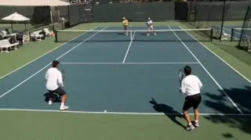
The way most teams play makes it impossible to beat lobbers.
No matter where I am teaching I get the same answer to this question \"what gives you the most trouble in doubles?\" The answer: \"We always lose to the lobbers.\"
The thing that always amazes me is that these players are all being taught to play in a way that makes it almost impossible to beat lobbers, and that's for players from 2.5 to 4.5, and every level in between. I see this as well when I'm playing at the 5.0 level or in national events.
So let me make a bold statement. If you learn the secrets of court positioning and shot selection in the System you will develop the ability to consistently defeat the lobbers. And the confidence that you can.
The way you are playing now, more than likely, sets lobbers up on a consistent basis. And again very likely you have no plan that offers hope of changing that outcome. For most players, trying to beat lobbers is like getting in a car and trying to drive somewhere without turning on the GPS.
The biggest mistake teams make against lobbers is discounting the effectiveness of their style of play. We hear things like \" that's not real tennis\", or \" we were better than them, they just beat us with lobs.\"
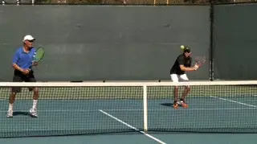
The biggest mistake against lobbers is closing too much on the wrong ball.
Players take great pride in losing to a team that hits very hard or with a lot of spin. But they are ashamed when they lose to players who hit softly or lob. That's just ego and frustration talking.
No one wants to lose to soft hitters and the frustration comes from having no answers for preventing those loses. Instead, players are told over and over to keep doing the same things that are causing them to lose in the first place.
The most common advice that leads to defeat is: \"Keep closing in! The team that gets to net wins.\" Controlling the net is great but if you keep running back for lobs you're not controlling anything.
Let's start by accepting that the lob is a great weapon in doubles. But the wrong positioning and shot selection makes the lob even more effective.
With the System you will learn to neutralize the lob game. Depending on the opponent it may not be easy. It may require patience.
But if you learn to hit to the right spots with the right spins and be aggressiveness at the right times you will prevail. Being \"patiently aggressive\" is my favorite tennis oxymoron. Understood correctly, being patiently aggressive is the magic key to beating lobbers.
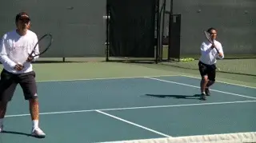
The Helper, diagonally across from the ball, is always further back, around the service line.
Positioning
Positioning is the foundation in dealing against lobs. As we saw in the previous article in our system (link) one player is always the Hunter and one is always the Helper.
The Helper--the player diagonally across from the ball--is always around the service line. When opponents are hitting from the baseline or behind the baseline has to resist the natural urge to get closer to the net. He has to stay in position.
There are several reasons. First this positioning prevents the opponents from lobbing crosscourt over the Helper's head. This is extremely important because there is no defense against a crosscourt lob once it's over your head.
Second, the Helper is in position to cover a lob goes over his partner's head, either in the air or after the bounce. The down the line lob is hit in basically a straight line. This makes it's much easier to run down, especially if you're already at the service line.
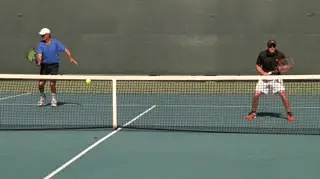
There is no defense against a good crosscourt lob.
The positioning of the Hunter is critical as well. The Hunter is positioned closer to the net than the Helper, but he never closes in all the way when the opponent hits the ball from the baseline or deeper.
Closing
Although \"closing\" is common advice for net players in doubles, closing in too far when your opponent is back--and especially when the opponent hitting the ball is in front of you--is the biggest mistakes you can make against the Lobbers.
You may have been taught to play this way. But against good lobbers you are making it way too easy to lob over your head, forcing your partner to run behind you time and time again.
The correct position for the Hunter should be halfway into the box, with his toes pointing toward the ball. From this position, the Hunter can easily move back to the service to cover overheads, balls that would land halfway back between the service line and the baseline if they went over his head. With this positioning, the Helper doesn't have to cover every lob, just the deep ones.
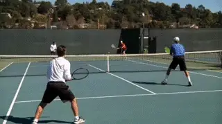
The Hunter hits his overheads crosscourt.
Shot Selection
When dealing with lobs, where you hit is as critical as the positioning. When you are able to hit an overhead, there is a simple formula.
If the lob goes to the Hunter, the Hunter hits overheads \"close to close\" crosscourt. If the ball comes back, the partners switch roles. The crosscourt overhead will be in front of the Helper, so the Helper moves in and assumes the Hunter role.
Simultaneously, the Hunter will move back and become the Helper. He is now in position to defend against a lob that goes over his partner's head.
If the lob goes to the Helper and is deep enough that the Helper must hit it behind the service line, the Helper should hit the overhead cross-court so the ball is now in front of his partner. The Helper must think of this as set up shot.
By hitting it in front of the person who is already closer to the net you accomplish several things. First, your team will have to do almost no repositioning. You will both be ready for the next ball, regardless of where it goes.
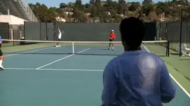
The Helper hits his overheads to keep the ball in front of his partner.
Second, keeping the ball in front of the Hunter means the Hunter can pick off any weak or short balls. Third, the Hunter can prevent the opponent from hitting the ball at the feet of the Helper.
When you hit an overhead from the backcourt you are vulnerable to short, low balls. By putting the ball in front of your partner you give them the best chance of cutting off the reply and protecting your feet.
If the lob goes to the Helper but is short, the Helper should move forward and hit the ball directly in front of himself. Again the partners switch roles.
As the Helper moves forward, he becomes the Hunter. The Hunter moves back and becomes the Helper. This will give you balanced positioning at all times.
Against lobbers, you never hit the ball deep crosscourt and close in. Why? You will get lobbed every time.
The only exception is if the ball is falling short and low as you get to it. In this case you hit a touch angle volley crosscourt. Again, this is only done on a ball that can't be aggressively hit down the line at the opposing net player.
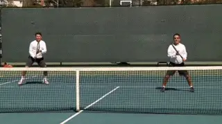
If the ball is falling, hit a touch angle volley.
What if the lob goes deep down the line and the Helper has to chase it down after the bounce? This is the worst-case scenario but it can still be managed effectively.
First, the Helper needs to run around the ball to get behind the shot. Second, once the Helper gives up the net, both players are giving up the net. If you leave one player at the net when you are retreating that player won't be able to help you and you may get them killed.
As he starts for the lob, the Helper yells to his partner is \"get back!\" The partner runs back as fast as possible. There is only one shot for the Helper to hit once they get back to the ball: a high lob! The higher, the better.
A lot of players ask me whether to hit this lob crosscourt or down the line and I always tell them the same thing. Hit it in!
Don't be fancy or cut it too close. The higher you hit it, the more time you have to regroup. A lob that goes high and past the service line is ideal.
The most vulnerable are for your team close is now the short court so don't hit them anything they can drop short. Even if the opponents are hitting an overhead, you and your partner are in position to return their overhead with another lob.
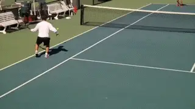
When you both give up the net, the only shot is a high lob.
So many times, I watch players running up to the net for no reason. Once you're both back, the key is to be patient. Your positioning and shot selection is based on your opponent's positioning.
If your opponents take the net and aren't moving back, stay way back and lob. You need to lob and lob until one of three things happens.
They miss. Or you hit it over their heads and they have to retreat. Now you can take the net.
Or, you lob it past the service line. Now you can move up to the baseline and either lob again or attack a weak ball. Always try to hit to the person who is out of position or off balance. That is often the person who hit the last ball.
If you lob someone driving them back past the service line, you have two other options. Hit it at their feet. Or if their partner is close to the net, lob their partner and make them run.
Ultimate Lobbers
What do you when both opponents are back? This is the ultimate lobber formation.
This is usually the formation that causes teams to self-destruct. It can be very difficult to put the ball away when both opponents are back and lobbing.

The most aggressive play for the Hunter is to hit the overhead on a sharp angle.
To succeed, it's extremely important to keep your basic principles of positioning. Here is what stays the same. The player in front of the ball is the Hunter and is closer to the net. The player crosscourt from the ball is the Helper and is further from the net.
So, the fundamental principle of positioning in the system is the same. There is always a stagger between the partners.
There are times, however where we may move the entire unit closer or farther from the net while keeping the stagger is place. This depends on the position of the ball and what situation your opponents are in as discussed below.
The Helper still takes deep lobs past the service line and hits them in front of his partner. If the Helper hits the overhead directly in front of himself, he opens up the court for a crosscourt over his partners head.
But there is a big difference when the opponents are both back. Now there is no \"short to short\" play since both opponents are back. This changes shot selection in a fundamental way.
There is no one for the Hunter to hit the ball to short to short. If The Hunter hits a deep crosscourt overhead--or a volley--he will be vulnerable to a crosscourt lob over his head.
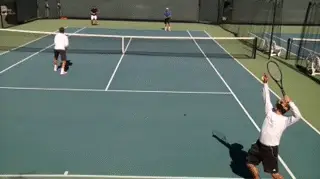
The other key play against two back is the angle volley.
The most aggressive play for the Hunter is to hit the overhead on a sharp angle crosscourt for a winner. But if this is not possible, the Hunter hits directly forward in front of himself.
The other major play is angle or drop volleys. Both players should be looking to hit these at the first opportunity. It's an easier play for the Hunter, but If the Helper gets a short ball, he also the option of hitting a touch short angle volley crosscourt.
This is a fundamental weakness to two back that most teams never exploit. With both players back there is no one to cover the front court.
The minute you get something short, you hit it short and/or angled whether it is the overhead or the volley. Deep volleys will just continue the lobbing.
No matter what you have heard, no one should be hugging the net when both opponents are back. This a basic mistake made by many teams, even if they are experienced and successful.
It's just too easy for experienced lobbers to keep hitting over the close players head negating any advantage to being at net. Both partners must stay disciplined and patient. Angled balls--overheads and volleys--and touch drop volleys are winning shots in this situation.
As the match goes on, keep working on the player in front of the Hunter. Hit wide and middle balls to their side. You won't have to reposition, and you will create space and eventually get a shot you can capitalize on.
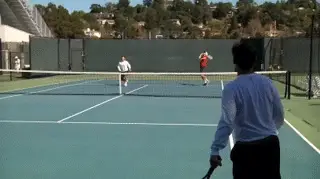
Again: angled overheads and angled volleys: the two keys against two back.
What do you do when you have to retreat for a deep lob over the Hunter's head? If the team keeps its position correctly, there should never be a crosscourt lob over either player's head.
This is important because there is no defense against a successful crosscourt lob. There will be times, however, when there will be a deep lob over the Hunter's head that the Helper must retreat for. Here are the rules for this situation.
When the Helper is running back, he must make sure to get behind the ball. Don't run straight at the bounce. Run in an arc to get behind the bounce. This will get you in a better position to hit your return.
While the Helper runs back, he directs his partner The Hunter to \"get back!\" The Hunter then turns and runs as fast as possible back and crosscourt. He also keeps an eye on his partner so that he can turn and face their opponents as his partner strikes the ball.
The only play for Helper after running back is the lob. This will buy you time to get ready for the next shot.
Since you're both back now, you don't want to give your opponents anything they can hit short. You're completely vulnerable to the short ball so don't set them up to hit it.
I am often asked where the retreating lob should be hit. I always say; high and down the middle. If you hit it high and slow you have more time. If you aim for the middle you will not miss wide (the worst thing you can ever do on a defensive lob is miss wide) and you won't give your opponents any angle to hit a winner on the return.
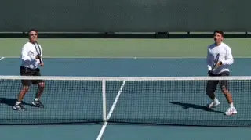
The best retreating lob: high and down the middle.
You can now play defense together as a team. If you \"switch\" and leave your partner at the net, they will get killed if you hit a weak or short shot.
Once you're both back, continue lobbing until you're able to push them back and/or get a short ball. Stay well behind the baseline. The most common mistake in this situation is running to the net when your opponents have control of the net.
So let us know what you think of the article in the Forum--and how the System affects your ability to deal with lobbers. Stay tuned for much more!
You must be patient in this situation. If you lob deep over their heads, you can take back the net. If you push them behind the service line you can step up to the baseline and attack their feet.
You can make them keep hitting and put the \"Three Ball Rule\" into play. In our clinics we notice that if you make a player hit overheads, or a combination of overheads and volleys, they almost never make three shots in a row.
By the third shot they are off balance, out of position, often angry and/or frustrated and maybe even physically tired. This may seem obvious, but many good players don't play defensive shots when they are on the defensive. Don't try to be a hero and blast your way out of trouble.
|  | his life. He played his |
| collegiate tennis at St. John's | |
| University in New York and has | |
| been nationally ranked in | |
| singles, doubles and Father-Son | |
| Doubles. Bill has been a Head | |
| Pro and Director of Tennis at | |
| several clubs since 1981 and has | |
| also coached high school and | |
| college tennis. He lives in | |
| Branford, CT. He can be | |
| contacted at: | |
| previdib@gmail.com | |
| Matt Previdi is a high | |
| performance coach in La Jolla, | |
| California and the head coach of | |
| the La Jolla High boys' tennis | |
| team, which in the the past 6 | |
| years he has led to a 72-8 | |
| record and 2 sectional titles. | |
| Matt is a Master Racquet | |
| Technician, the head of the | |
| Solinco national stringing team, | |
| as well as the Solinco player | |
| liason and brand representative. | |
| He can be contacted at: | |
| mprevidi@gmail.com |